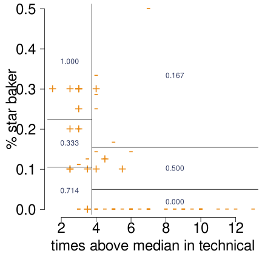
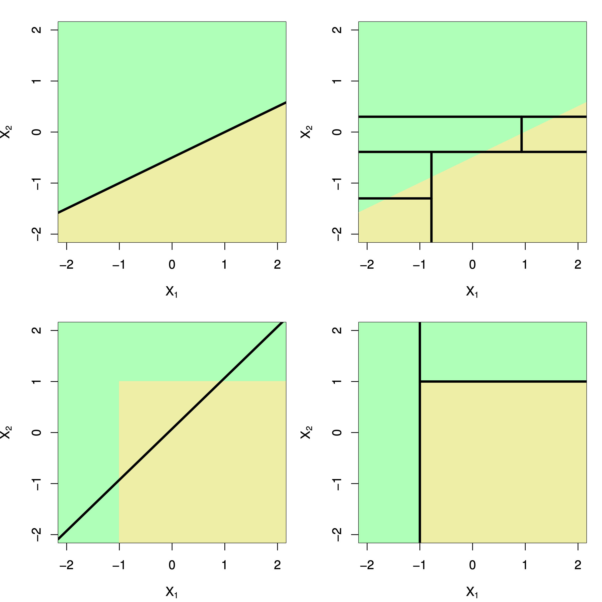
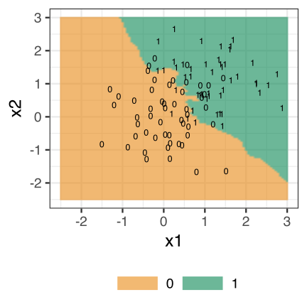

17 Nonlinear classifiers
Stat 406
Daniel J. McDonald
Last modified – 09 October 2023
\[ \DeclareMathOperator*{\argmin}{argmin} \DeclareMathOperator*{\argmax}{argmax} \DeclareMathOperator*{\minimize}{minimize} \DeclareMathOperator*{\maximize}{maximize} \DeclareMathOperator*{\find}{find} \DeclareMathOperator{\st}{subject\,\,to} \newcommand{\E}{E} \newcommand{\Expect}[1]{\E\left[ #1 \right]} \newcommand{\Var}[1]{\mathrm{Var}\left[ #1 \right]} \newcommand{\Cov}[2]{\mathrm{Cov}\left[#1,\ #2\right]} \newcommand{\given}{\ \vert\ } \newcommand{\X}{\mathbf{X}} \newcommand{\x}{\mathbf{x}} \newcommand{\y}{\mathbf{y}} \newcommand{\P}{\mathcal{P}} \newcommand{\R}{\mathbb{R}} \newcommand{\norm}[1]{\left\lVert #1 \right\rVert} \newcommand{\snorm}[1]{\lVert #1 \rVert} \newcommand{\tr}[1]{\mbox{tr}(#1)} \newcommand{\brt}{\widehat{\beta}^R_{s}} \newcommand{\brl}{\widehat{\beta}^R_{\lambda}} \newcommand{\bls}{\widehat{\beta}_{ols}} \newcommand{\blt}{\widehat{\beta}^L_{s}} \newcommand{\bll}{\widehat{\beta}^L_{\lambda}} \]
Last time
We reviewed logistic regression
\[\begin{aligned} \P(Y = 1 \given X=x) & = \frac{\exp\{\beta_0 + \beta^{\top}x\}}{1 + \exp\{\beta_0 + \beta^{\top}x\}} \\ \P(Y = 0 \given X=x) & = \frac{1}{1 + \exp\{\beta_0 + \beta^{\top}x\}}=1-\frac{\exp\{\beta_0 + \beta^{\top}x\}}{1 + \exp\{\beta_0 + \beta^{\top}x\}}\end{aligned}\]
Make it nonlinear
We can make LDA or logistic regression have non-linear decision boundaries by mapping the features to a higher dimension (just like with regular regression)
Say:
Polynomials
\((x_1, x_2) \mapsto \left(1,\ x_1,\ x_1^2,\ x_2,\ x_2^2,\ x_1 x_2\right)\)
Visualizing the classification boundary
Code
library(cowplot)
gr <- expand_grid(x1 = seq(-2.5, 3, length.out = 100), x2 = seq(-2.5, 3, length.out = 100))
pts_logit <- predict(logit_poly, gr)
pts_lda <- predict(lda_poly, gr)
g0 <- ggplot(dat1, aes(x1, x2)) +
scale_shape_manual(values = c("0", "1"), guide = "none") +
geom_raster(data = tibble(gr, disc = pts_logit), aes(x1, x2, fill = disc)) +
geom_point(aes(shape = as.factor(y)), size = 4) +
coord_cartesian(c(-2.5, 3), c(-2.5, 3)) +
scale_fill_viridis_b(n.breaks = 6, alpha = .5, name = "log odds") +
ggtitle("Polynomial logit") +
theme(legend.position = "bottom", legend.key.width = unit(1.5, "cm"))
g1 <- ggplot(dat1, aes(x1, x2)) +
scale_shape_manual(values = c("0", "1"), guide = "none") +
geom_raster(data = tibble(gr, disc = pts_lda$x), aes(x1, x2, fill = disc)) +
geom_point(aes(shape = as.factor(y)), size = 4) +
coord_cartesian(c(-2.5, 3), c(-2.5, 3)) +
scale_fill_viridis_b(n.breaks = 6, alpha = .5, name = bquote(delta[1] - delta[0])) +
ggtitle("Polynomial lda") +
theme(legend.position = "bottom", legend.key.width = unit(1.5, "cm"))
plot_grid(g0, g1)A linear decision boundary in the higher-dimensional space corresponds to a non-linear decision boundary in low dimensions.
Trees (reforestation)
We saw regression trees last module
Classification trees are
- More natural
- Slightly different computationally
Everything else is pretty much the same

Axis-parallel splits
Like with regression trees, classification trees operate by greedily splitting the predictor space
[1] "winners"
[2] "series"
[3] "age"
[4] "occupation"
[5] "hometown"
[6] "percent_star"
[7] "percent_technical_wins"
[8] "percent_technical_bottom3"
[9] "percent_technical_top3"
[10] "technical_highest"
[11] "technical_lowest"
[12] "technical_median"
[13] "judge1"
[14] "judge2"
[15] "viewers_7day"
[16] "viewers_28day" Code
par(mar = c(5, 5, 0, 0) + .1)
plot(bakeoff$technical_median, bakeoff$percent_star,
pch = c("-", "+")[bakeoff$winners + 1], cex = 2, bty = "n", las = 1,
ylab = "% star baker", xlab = "times above median in technical",
col = orange, cex.axis = 2, cex.lab = 2
)
partition.tree(smalltree,
add = TRUE, col = blue,
ordvars = c("technical_median", "percent_star")
)
When do trees do well?

2D example
Top Row:
true decision boundary is linear
🍎 linear classifier
👎 tree with axis-parallel splits
Bottom Row:
true decision boundary is non-linear
🤮 A linear classifier can’t capture the true decision boundary
🍎 decision tree is successful.
How do we build a tree?
- Divide the predictor space into \(J\) non-overlapping regions \(R_1, \ldots, R_J\)
this is done via greedy, recursive binary splitting
- Every observation that falls into a given region \(R_j\) is given the same prediction
determined by majority (or plurality) vote in that region.
Important:
- Trees can only make rectangular regions that are aligned with the coordinate axis.
- The fit is greedy, which means that after a split is made, all further decisions are conditional on that split.
How do we measure quality of fit?
Let \(p_{mk}\) be the proportion of training observations in the \(m^{th}\) region that are from the \(k^{th}\) class.
| classification error rate: | \(E = 1 - \max_k (\widehat{p}_{mk})\) |
| Gini index: | \(G = \sum_k \widehat{p}_{mk}(1-\widehat{p}_{mk})\) |
| cross-entropy: | \(D = -\sum_k \widehat{p}_{mk}\log(\widehat{p}_{mk})\) |
Both Gini and cross-entropy measure the purity of the classifier (small if all \(p_{mk}\) are near zero or 1).
These are preferred over the classification error rate.
Classification error is hard to optimize.
We build a classifier by growing a tree that minimizes \(G\) or \(D\).
Pruning the tree
Cross-validation can be used to directly prune the tree,
But it is computationally expensive (combinatorial complexity).
Instead, we use weakest link pruning, (Gini version)
\[\sum_{m=1}^{|T|} \sum_{k \in R_m} \widehat{p}_{mk}(1-\widehat{p}_{mk}) + \alpha |T|\]
\(|T|\) is the number of terminal nodes.
Essentially, we are trading training fit (first term) with model complexity (second) term (compare to lasso).
Now, cross-validation can be used to pick \(\alpha\).
Advantages and disadvantages of trees (again)
🎉 Trees are very easy to explain (much easier than even linear regression).
🎉 Some people believe that decision trees mirror human decision.
🎉 Trees can easily be displayed graphically no matter the dimension of the data.
🎉 Trees can easily handle qualitative predictors without the need to create dummy variables.
💩 Trees aren’t very good at prediction.
💩 Trees are highly variable. Small changes in training data \(\Longrightarrow\) big changes in the tree.
To fix these last two, we can try to grow many trees and average their performance.
We do this next module
KNN classifiers
- We saw \(k\)-nearest neighbors in the last module.
Code
gr$nn03 <- knn3
ggplot(dat1, aes(x1, x2)) +
scale_shape_manual(values = c("0", "1"), guide = "none") +
geom_raster(data = tibble(gr, disc = knn3), aes(x1, x2, fill = disc), alpha = .5) +
geom_point(aes(shape = as.factor(y)), size = 4) +
coord_cartesian(c(-2.5, 3), c(-2.5, 3)) +
scale_fill_manual(values = c(orange, blue), labels = c("0", "1")) +
theme(
legend.position = "bottom", legend.title = element_blank(),
legend.key.width = unit(2, "cm")
)Choosing \(k\) is very important
Code
set.seed(406406406)
ks <- c(1, 2, 5, 10, 20)
nn <- map(ks, ~ as_tibble(knn(dat1[, -1], gr[, 1:2], dat1$y, .x)) |>
set_names(sprintf("k = %02s", .x))) |>
list_cbind() |>
bind_cols(gr)
pg <- pivot_longer(nn, starts_with("k ="), names_to = "k", values_to = "knn")
ggplot(pg, aes(x1, x2)) +
geom_raster(aes(fill = knn), alpha = .6) +
facet_wrap(~ k) +
scale_fill_manual(values = c(orange, green), labels = c("0", "1")) +
geom_point(data = dat1, mapping = aes(x1, x2, shape = as.factor(y)), size = 4) +
theme_bw(base_size = 18) +
scale_shape_manual(values = c("0", "1"), guide = "none") +
coord_cartesian(c(-2.5, 3), c(-2.5, 3)) +
theme(
legend.title = element_blank(),
legend.key.height = unit(3, "cm")
)How should we choose \(k\)?
Scaling is also very important. “Nearness” is determined by distance, so better to standardize your data first.
If there are ties, break randomly. So even \(k\) is strange.
knn.cv() (leave one out)

I would use the largest (odd) k that is close to the minimum.
This produces simpler, smoother, decision boundaries.
Final version
Code
kopt <- max(which(err == min(err)))
kopt <- kopt + 1 * (kopt %% 2 == 0)
gr$opt <- knn(dat1[, -1], gr[, 1:2], dat1$y, k = kopt)
tt <- table(knn(dat1[, -1], dat1[, -1], dat1$y, k = kopt), dat1$y, dnn = c("predicted", "truth"))
ggplot(dat1, aes(x1, x2)) +
theme_bw(base_size = 24) +
scale_shape_manual(values = c("0", "1"), guide = "none") +
geom_raster(data = gr, aes(x1, x2, fill = opt), alpha = .6) +
geom_point(aes(shape = y), size = 4) +
coord_cartesian(c(-2.5, 3), c(-2.5, 3)) +
scale_fill_manual(values = c(orange, green), labels = c("0", "1")) +
theme(
legend.position = "bottom", legend.title = element_blank(),
legend.key.width = unit(2, "cm")
)
Best \(k\): 19
Misclassification error: 0.17
Confusion matrix:
truth
predicted 1 2
1 41 6
2 11 42Next time …
Module 4
boosting, bagging, random forests, and neural nets
UBC Stat 406 - 2023